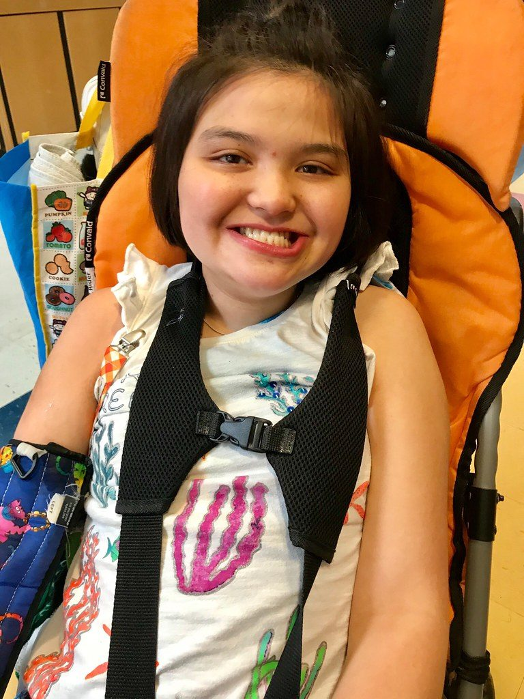

General information only. It does not replace advice from a health professional or genetic counselling.


At a glance
| Gene | MECP2, on the X chromosome |
| Inheritance | X-linked dominant; more than 95 % of cases are new |
| Frequency | 1 in 10,000-15,000 girls |
| Main features | Regression at 6-18 months, loss of speech and hand use, repetitive hand movements |
| Treatment | Trofinetide in the United States since 2023; gene therapy in trials |
What it is
It was described in 1966 by Austrian paediatrician Andreas Rett, who noticed two girls in his waiting room making the same hand movement, as if washing their hands. The condition has a very characteristic course:
- First 6-18 months: development seems normal or nearly normal.
- Regression, between age 1 and 4: the girl loses the words she had learnt and the purposeful use of her hands, which is replaced by repetitive wringing, washing or hand-to-mouth movements. Autism-like features appear.
- Stabilisation: eye contact and communication through gaze improve, and gaze becomes her main means of expression.
- Late motor decline, with stiffness and scoliosis.
Other common problems include epilepsy, breathing irregularities such as breath-holding or hyperventilation while awake, digestive problems, scoliosis, slow head growth and a risk of arrhythmias from long QT.
Cause
In 1999, Huda Zoghbi's team discovered that almost all cases are due to variants in the MECP2 gene. Its protein binds to methylated DNA and regulates thousands of genes in mature neurons. Without it, neurons do not die, but do not work properly.
The gene is on the X chromosome. Girls have two X chromosomes, and in each cell one is switched off at random by X inactivation. So they have some cells with the healthy copy and others with the altered one, and severity varies with the proportion. Boys, with only one X, usually have a very severe encephalopathy in the first months of life, although some have different forms.
More than 95 % of cases are new variants, almost always on the X chromosome in the father's sperm. The risk of it happening again in another child is under 1 %.
A finding that brought hope
In 2007, Adrian Bird's team in Edinburgh created mice lacking MECP2 that developed Rett-like symptoms. When they reactivated the gene in already ill mice, the symptoms largely disappeared. It showed that the neurons are not permanently damaged and that the disease could be reversible.
Treatment
- In 2023 the United States approved trofinetide, the first specific drug, which modestly improves symptoms and communication. Diarrhoea is a common side effect.
- Usual care is multidisciplinary: antiseizure medication, physiotherapy, occupational therapy, augmentative communication with boards or eye-gaze devices, and management of scoliosis and nutrition.
- Several gene therapies in clinical trials deliver a copy of MECP2 with a system to regulate its amount, because too much MECP2 is also harmful: duplication of the gene causes another syndrome in boys.
Many women with Rett reach adulthood and live beyond 50.
Where to learn more
- Spanish Rett Syndrome Association
- Rett Syndrome Research Trust
- Orphanet: Rett syndrome
See also: Fragile X syndrome, Prader-Willi and Angelman syndromes and Epigenetics.
Sources
- Amir RE, Van den Veyver IB, Wan M, et al. Rett syndrome is caused by mutations in X-linked MECP2, encoding methyl-CpG-binding protein 2. Nat Genet. 1999;23(2):185-188. doi:10.1038/13810
- Guy J, Gan J, Selfridge J, Cobb S, Bird A. Reversal of neurological defects in a mouse model of Rett syndrome. Science. 2007;315(5815):1143-1147. doi:10.1126/science.1138389
- Neul JL, Percy AK, Benke TA, et al. Trofinetide for the treatment of Rett syndrome: a randomized phase 3 study. Nat Med. 2023;29(6):1468-1475. doi:10.1038/s41591-023-02398-1